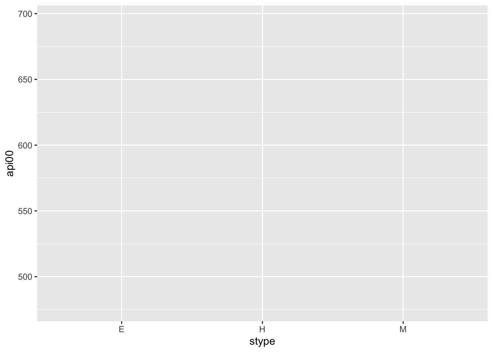
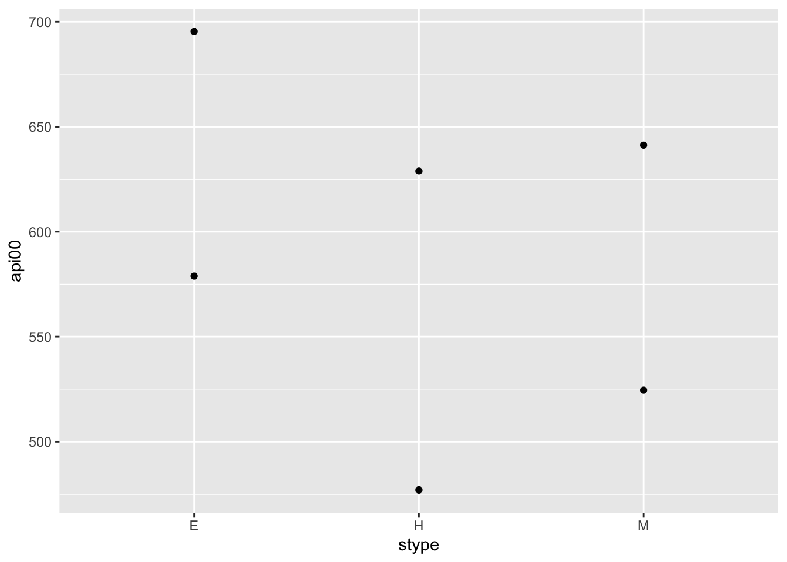
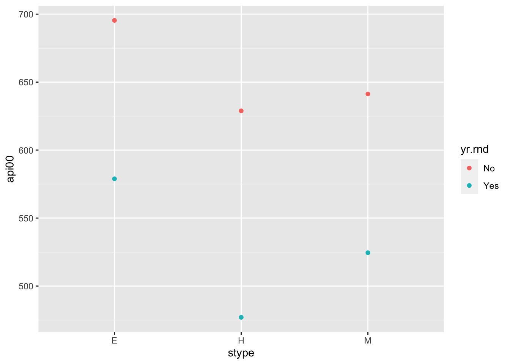
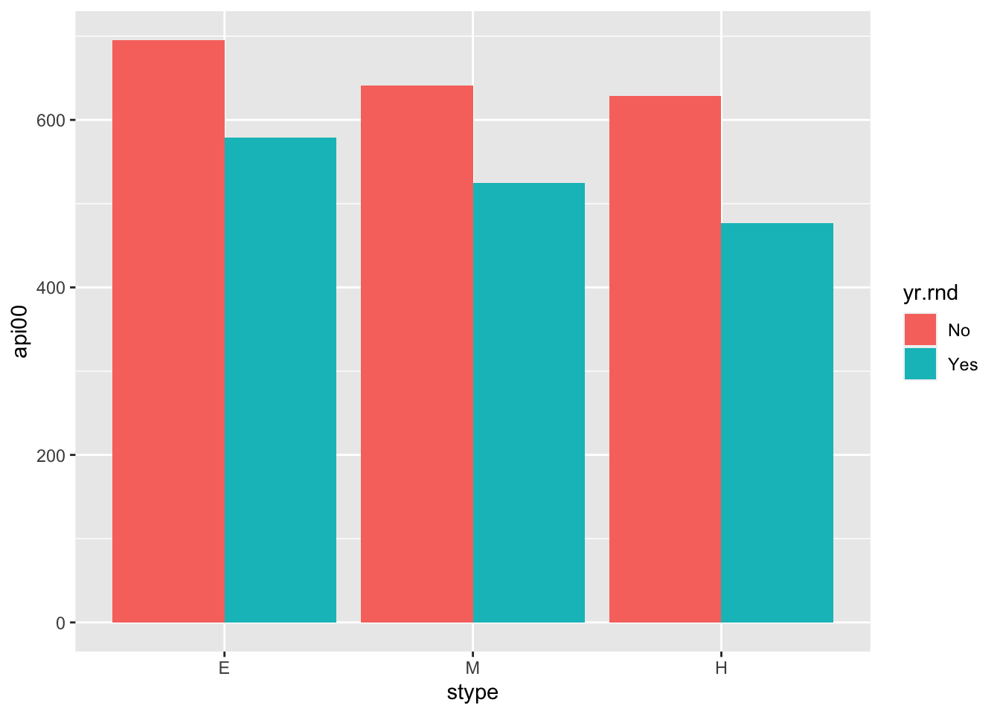
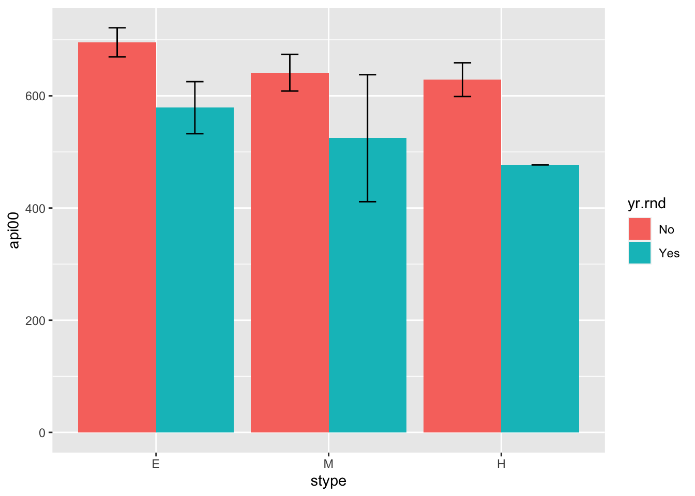

4 Plotting
The ggplot2 package is standard in the R universe to create high quality plots and graphs. Below is a brief overview, but you should also take a look at the ggplot2 cheatsheet. The cheatsheet will be useful when you want greater control over plot formatting, scales, color, error bars, and other extras later.
The ggplot2 package comes as part of the tidyverse. If you didn’t install the tidyverse package earlier, do it now using install.packages("tidyverse") and then load it into your R workspace using library.
4.0.1 Using ggplot2
When creating graphs using ggplot, the first line of code always uses the function ggplot() This is the foundation of your plot where you will usually provide the data for the graph, the variables you want to plot, and other aesthetic factors like colors.

Here, we’re plotting the type of school (E, M, H) on the x-axis and the mean API score in 2000 on the y-axis. Running this code alone will give you an empty plot. Every time you want to add a new layer to graph (e.g. line plots, bar graphs) you’ll use a plus sign at the end of each line. The extra layers to plot your data are called geoms. Below we use the point geom to display our data as points on the graph.

Recall that our table features each category of school twice: once for schools that are year round and another time for schools that are not, which is why this plot gives you two points/values for each category. We can differentiate between the two by adding a color argument in the plot aesthetics.

This code groups the points using the yr.rnd variable using colors and adds a legend. You can achieve something similar by using shape instead of color as well.
Something that doesn’t quite work in our plot is the order of the school type variable. R orders the schools alphabetically: Elementary, High, then Middle. But we know that there’s an order/heirarchy to how this should be displayed. You can add an order to any variable using the ordered function.
Note that the $ sign after a data table name is used to specify a column in a dataframe. Now try plotting your graph again to check if it changes.
While this chart looks nice, our data is probably better suited to a bar chart. Try making one using geom_bar instead of geom_point.
Does your code return an error? This is because
geom_bar()on its own is used to display histograms (which require only one variable). To ensure that R knows we want a bar graph as the output, add thestatargument to the bar geom layer as below:ggplot(data = means, mapping = aes(x = stype, y = api00, fill = yr.rnd)) + geom_bar(stat = "identity")
(We changed our
colorargument in the plot aesthetics tofillbecausecolorwill only outline the shapes instead of filling them with color.)

This plot is still not quite what we want because our bars for each school category are stacked on top of each other. To modify with the positioning of these bars, we use the position argument in the geom layer.
ggplot(data = means, mapping = aes(x = stype, y = api00, fill = yr.rnd)) +
geom_bar(stat = "identity", position = "dodge")
This is a better graph to interpret and draw inferences from. Other formatting options would be to change the labels of the axes, the legend titles, etc.
You can layer multiple geom layers on the same plot. For example, we can add error bars to this graph using the confidence intervals we computed earlier. To add error bars:
ggplot(data = means, mapping = aes(x = stype, y = api00, fill = yr.rnd)) +
geom_bar(stat = "identity", position = "dodge") +
geom_errorbar(mapping = aes(ymin = ci_l.api00, ymax = ci_u.api00, width = 0.2), position = position_dodge(0.9))
Here, we use ymin and ymax to specify where the lower and upper points of the confidence interval lines should appear. These variables already exist in our data.
Great job! This is a lot of code to understand in the beginning, but you can find all these options along with additional geom layers, scale options, coordinate systems, etc in the ggplot cheatsheet.